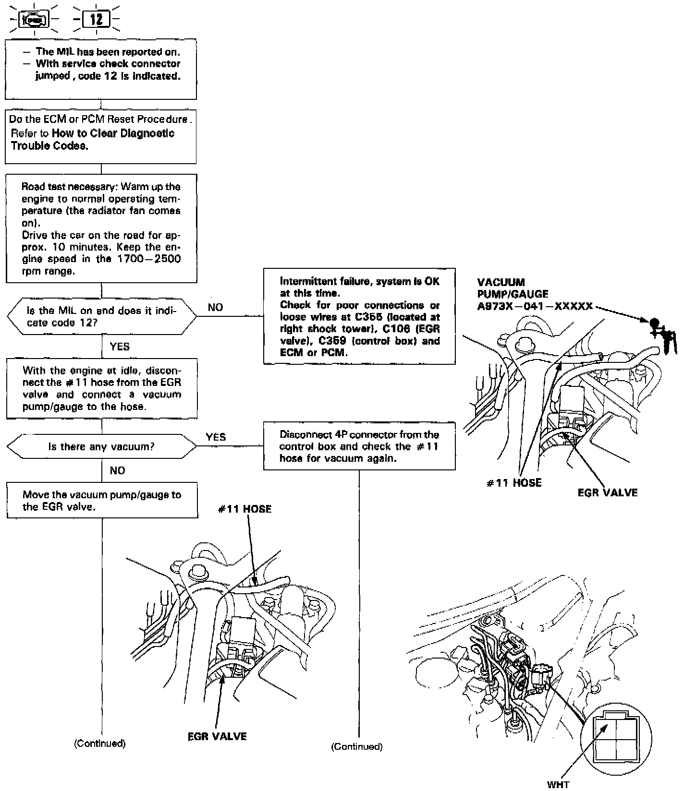
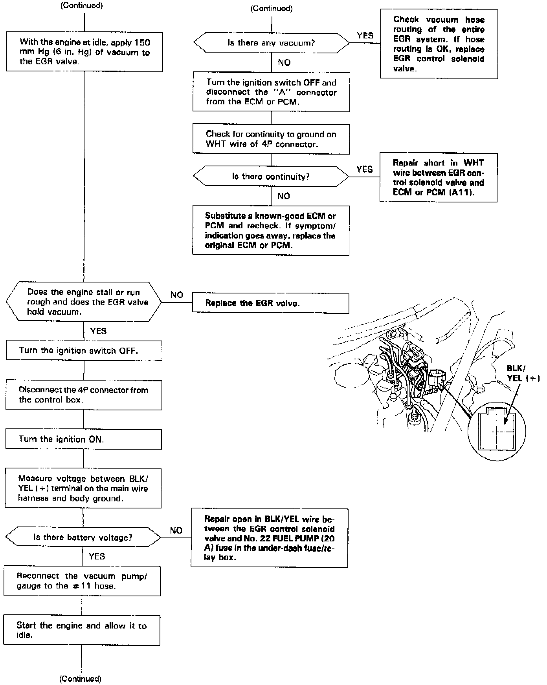
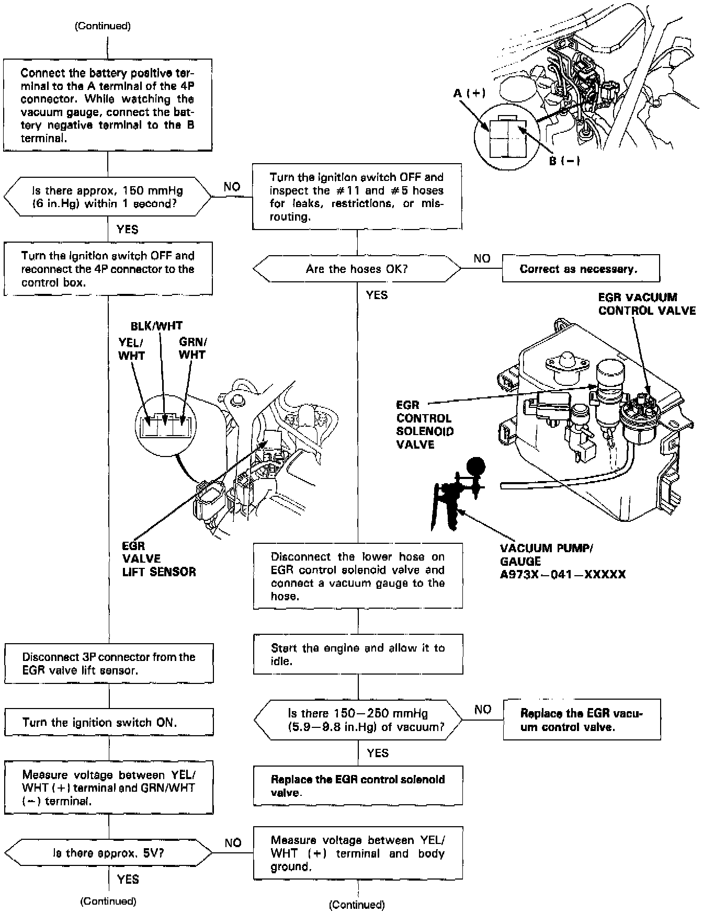
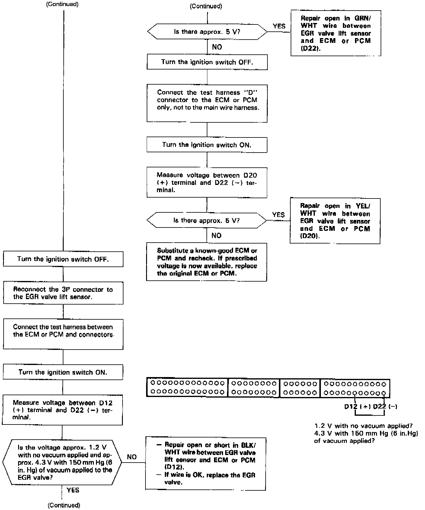
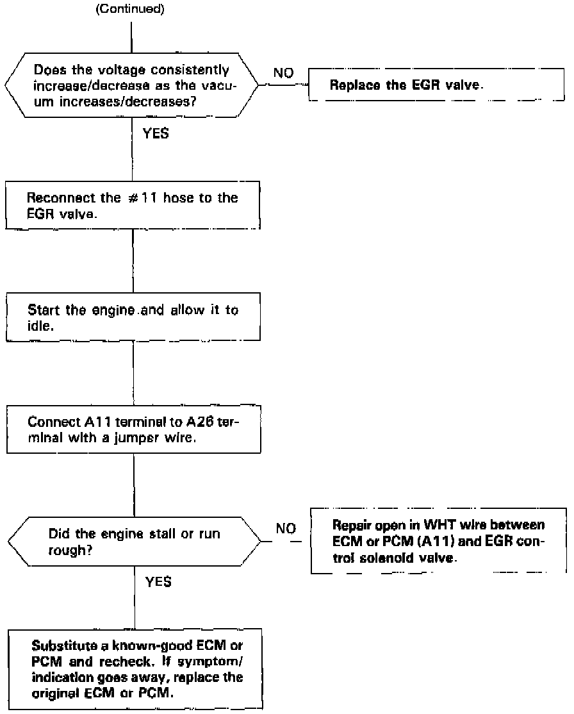

Operation CHARM
: Car repair manuals for everyone.
Home
>>
Acura
>>
1994
>>
Legend Sedan V6-3206cc 3.2L SOHC FI
>>
Repair and Diagnosis
>>
Powertrain Management
>>
Emission Control Systems
>>
Exhaust Gas Recirculation
>>
Testing and Inspection
Exhaust Gas Recirculation: Testing and Inspection





The Malfunction Indicator Lamp (MIL) indicates Diagnostic Trouble Code (DTC) 12: A problem in the Exhaust Gas Recirculation (EGR) system.